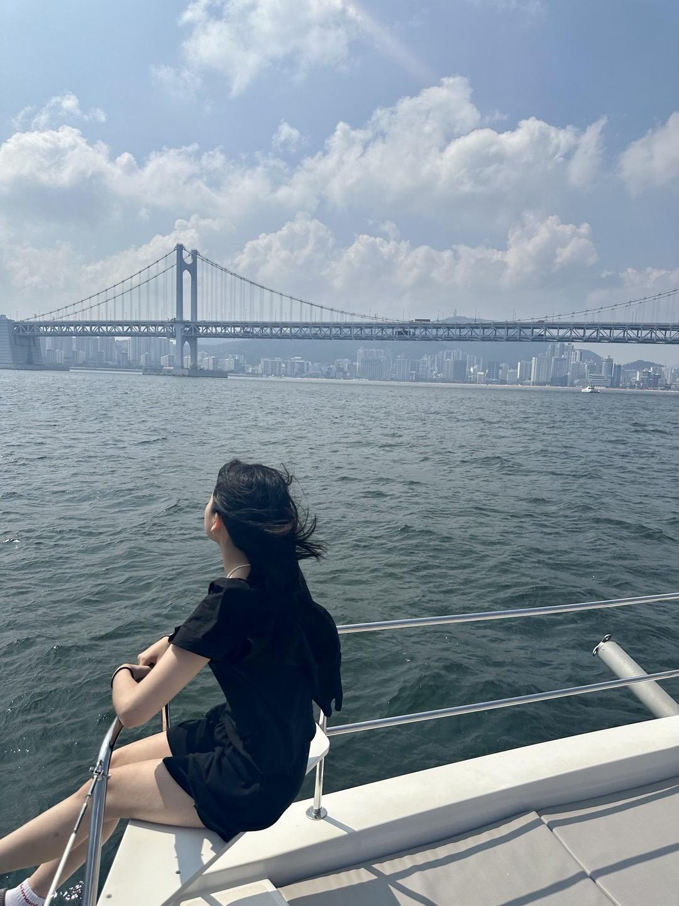

안녕하세요, 저는 숙명여자대학교 소프트웨어학부 컴퓨터과학전공 2310983 문서현입니다.
저는 현재 2024 소프트웨어학부 학생회 Core의 총무팀장을 하고 있습니다. 또한, 숙명여자대학교 유일 중앙 프로그래밍 동아리인 SOLUX에서도 올해부터 활동하게 되었습니다. 웹시스템설계 1분반 열심히 수강하겠습니다. 잘 부탁드립니다!

위의 사진은 제가 작년 여름에 부산여행에 가서 찍은 사진입니다. 저는 사진에서 드러나듯이 바다를 좋아합니다.